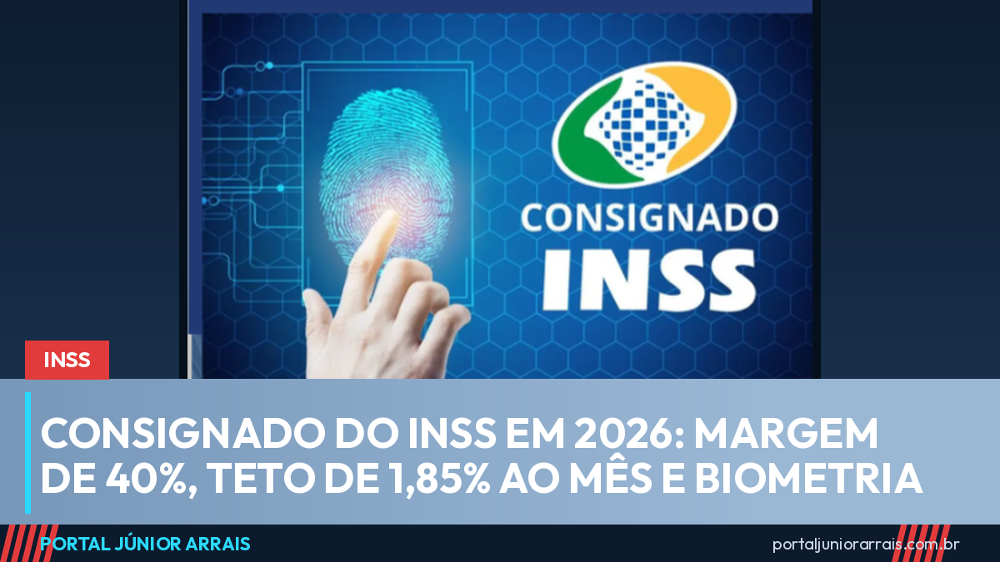

Consignado do INSS em 2026: margem de 40%, teto de 1,85% ao mês e biometria

O empréstimo consignado é a principal porta de crédito de quem recebe aposentadoria ou pensão do INSS — e é também onde mais gente é passada para trás. Em 2026, as regras mudaram em vários pontos ao mesmo tempo, e conhecer esses limites é a diferença entre pegar um empréstimo caro e cair numa fraude.
Quanto pode ser descontado do benefício
A margem consignável total de aposentados e pensionistas do INSS está em 40% da renda líquida. É o teto do quanto pode sair do benefício em parcelas de consignado. Existe uma previsão de redução gradual dessa margem, de 2 pontos percentuais por ano, até chegar a 30% em 2031. Ou seja: a tendência é o limite ir apertando, não afrouxando.
O teto dos juros e o custo que ninguém olha
O teto de juros do consignado do INSS é fixado pelo governo e está em 1,85% ao mês. Mas juros não é a conta toda. O que importa de verdade é o Custo Efetivo Total, o CET, que junta os juros com tarifas, seguro e demais encargos. E aí está uma das mudanças mais importantes: o CET não pode ultrapassar em mais de 1 ponto percentual a taxa de juros mensal contratada.
Na prática, é uma conta simples de conferir. Se o contrato traz juros de 1,5% ao mês, o custo total não pode passar de 2,5% ao mês. Se o número que aparece no papel é maior que isso, tem alguma coisa embutida que não deveria estar ali.
Prazo maior, parcela menor, dívida mais longa
O prazo máximo de pagamento para beneficiários do INSS foi ampliado para 108 meses — nove anos. A parcela mensal fica menor, o que ajuda quem está apertado, mas o total pago ao fim do contrato é maior. É uma escolha, não uma vantagem automática.
Biometria virou exigência
Para contratar consignado, aposentados e pensionistas passaram a ter que fazer validação biométrica. Essa exigência não nasceu por burocracia: ela é resposta direta ao volume de empréstimos contratados no nome de idosos sem que eles soubessem. Com a biometria, fica muito mais difícil alguém assinar um contrato no lugar do beneficiário.
As mudanças vieram de frentes diferentes ao longo do ano — a Lei nº 15.327/2026, que reforçou a proteção contra fraudes, alterações trazidas pelo Novo Desenrola Brasil e determinações do Tribunal de Contas da União.
Cuidado com golpe
Aqui está o ponto que mais custa dinheiro a quem recebe do INSS. O golpe clássico é a ligação ou mensagem oferecendo "liberação imediata" de um valor alto, com aprovação sem consulta e sem burocracia, cobrando antes uma taxa de liberação, um seguro ou um Pix "para destravar o sistema". Nenhum banco sério cobra para liberar empréstimo, e nenhuma instituição pede senha do benefício, código de mensagem ou foto de documento por telefone ou aplicativo.
Vale separar duas coisas que costumam ser misturadas de propósito. Crédito pessoal para quem recebe benefício existe e é avaliado pelo banco normalmente. O que não existe é consignado com desconto na folha oferecido por perfil de rede social, por mensagem de número desconhecido ou por quem pede pagamento adiantado.
Quem descobriu desconto de empréstimo que não reconhece, ou assinou contrato acreditando em condição diferente da que apareceu depois, deve procurar um profissional de sua confiança para analisar o contrato e o extrato do benefício e entender o que pode ser revertido.
Conteúdo informativo — não substitui orientação individualizada sobre o seu caso.
Foto: Tima Miroshnichenko/Pexels